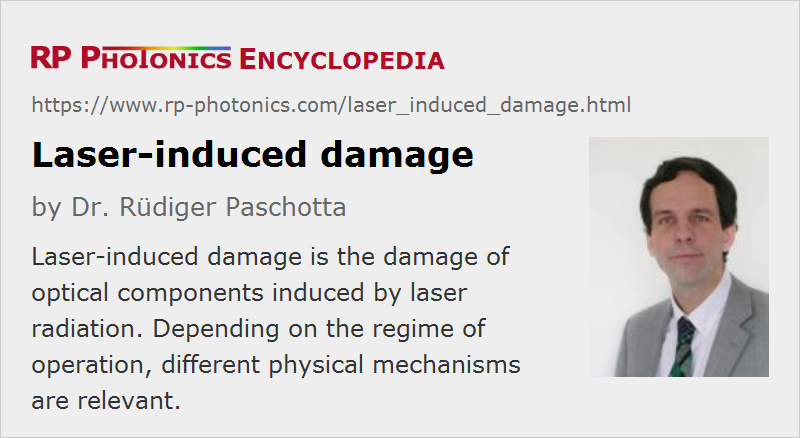

Laser-induced Damage
Acronym: LID
Definition: damage of optical components induced by laser radiation
German: laserinduzierte Zerstörung
Categories: lasers, optical metrology, light pulses, physical foundations
How to cite the article; suggest additional literature
Author: Dr. Rüdiger Paschotta
Laser light can have very high optical intensities, because it is usually delivered in the form of a laser beam with small transverse dimensions, and in addition it is often generated in the form of short or even ultrashort laser pulses. Therefore, laser light often causes laser-induced damage of optical components like laser mirrors, fibers, nonlinear crystal materials, prisms, optical filters, optical modulators and saturable absorbers, photodetectors and SESAMs. For various applications, one needs to select optical components with a sufficiently high optical damage threshold (LIDT). On the other hand, light-induced changes can be exploited in the context of various techniques for laser material processing, for example.
Optical damage is in principle a more general term than laser-induced damage. However, optical damage rarely occurs with other light sources.
Continuous-wave laser radiation can usually cause damage only at rather high power levels, except when materials are hit which exhibit a substantial absorption of laser light. Here, the typical damage mechanism is simply that some material is overheated, which causes a chemical degradation, in some cases even burning. Also, it is possible that parts fracture due to thermally induced stress. Such types of damage are called thermal damage. A high tendency for thermal damage occurs for parts with significant absorption – for example, for metal-coated mirrors and for absorbing neutral density filters. Catastrophic optical damage at the facets of laser diodes also involves thermal effects.
Laser-induced damage is more likely for intense pulses, as can be generated e.g. with Q-switched lasers and with ultrafast amplifiers. For example, even if the pulse energy is only 10 mJ, but the pulse duration is as short as 10 ns, the peak power is of the order of 10 mJ / 10 ns = 1 MW. If such a beam is focused to a beam waist with a beam radius of 10 μm, an enormous optical peak intensity of the order of 300 GW/cm2 is reached. For amplified ultrashort pulses, the peak intensities can become even higher; however, the damage threshold in terms of optical intensity may then also be higher (see below).
For very high intensities, nonlinear self-focusing may occur within a sample, which may lead to even further increased intensities. For example, catastrophic self-focusing in silica fibers can occur for power levels of a couple of megawatts.
Optical components differ very much in terms of damage threshold. Laser mirrors can exhibit very high values, but there are huge differences between different kinds of dielectric mirror coatings, which can be caused by different materials but also by different layer designs. For example, dielectric mirror designs for dispersive mirrors, as required for dispersion compensation, tend to lead to substantial optical intensities within the layer structure and therefore often lead to lower damage thresholds. Cemented components (e.g., some polarizers and waveplates) are also normally more sensitive to laser radiation than non-cemented parts. Sometimes, there is a trade-off between highest damage threshold and best performance in other respects.
Damage Involving Laser-induced Breakdown
The potential of intense laser pulses to cause damage is often based on nonlinear processes which increase the fraction of absorbed energy far above the value which would be experienced at lower intensity levels. In particular, many media are transparent at low or moderate optical intensities, but become strongly absorbing once the threshold for laser-induced breakdown is exceeded. The involved process may start with multiphoton absorption, which generates some free carriers, and these can subsequently provide strong linear absorption for further radiation. As the generated carriers have a limited lifetime, a sufficiently high optical energy must be provided within a short time. If the initial carriers are generated by multiphoton absorption in the used material, the related intrinsic damage process can be rather deterministic: damage sets in above a well defined damage threshold. In some cases, however, most initial carriers are generated at randomly distributed faults or impurities; in such cases, the tendency for damage involving such extrinsic effects substantially depends on the exact spot which is illuminated on a sample.
The physical mechanisms of laser damage may depend on the pulse duration. For example, one may have quite deterministic laser-induced damage for femtosecond pulses, which reliably sets in when the damage threshold is reached. For nanosecond and longer pulses, however, non-deterministic damage is often observed, where the probability of damage increases smoothly around the threshold. In the latter case, a larger safety margin is required for safely avoiding damage.
Normally, doubling the laser beam area should allow one to apply two times more power until damage occurs. Note, however, that a larger beam makes it more likely to hit a “bad spot” on a sample. Therefore, this kind of scaling may not work perfectly for some optical components. For large beam spots, one may more frequently see damage at a given intensity or fluence level.
For pulse trains with high pulse repetition rate, thermal effects may come into play, similar to those for continuous-wave beams.
Bulk and Surface Damage
Optical damage can arise within a bulk piece of some material, but also on its surfaces. As surfaces are often exhibiting a higher density of microscopic defects than bulk material, they more often exhibit damage related to impurities or defects. The laser damage threshold for optical surfaces can be substantially lower than for bulk material, and it may substantially depend on the exact surface treatment. Tiny scratches or a little dirt can substantially lower the damage threshold. The use of air-tight housings and proper optics cleaning techniques can be essential.
Often, optical components have dielectric coatings on their surfaces, e.g. anti-reflection coatings. Their damage thresholds can depend both on the used materials and the exact optical fabrication techniques, and may be substantially lower than for the bare (uncoated) material.
Damage Involving Mechanical Mounts and Dirt
Some optical components are embedded into mounts consisting of materials which should never be hit by laser beams. For example, there are plastic materials which easily melt and produce fumes. If this leads to the deposition of materials on optical surfaces, these may subsequently be easily damaged by a laser beam. Similar problems can arise if traces of machine oils remain on mechanical parts. Even if these are not hit by a laser beam, they may exhibit some outgasing. The gaseous substances may then be chemically altered when getting through a laser beam, and cause depositions on optical surfaces, which thus get darker and darker. The result can be a gradual degradation or laser-induced real damage.
For such reasons, it is advisable to use very clean parts and to avoid hitting mechanical mounts with a laser beam during alignment procedures, for example. Such issues are particularly important in the context of ultraviolet lasers.
Cumulative Effects
It can happen that although the material does not exhibit any easily detectable changes after having been hit with a single intense laser pulse, it does react to multiple pulses with the same parameters. This implies that the first pulses create only small hidden defects, which increase the tendency of the material for damage caused by further pulses. In some cases, such cumulative effects (also called fatigue effects) become apparent even after only a few pulses, whereas in other cases a large number of pulses is required. (One may obtain some kind of accelerated aging.) The involved physical mechanisms can be difficult to analyze in detail.
What Exactly is Damage?
It is not obvious how damage should be defined, and how exactly to determine in practice whether damage has occurred under certain conditions. In principle, any significant permanent change of characteristics of an irradiated sample should be considered as damage. In some cases, one examines a sample after irradiation with a microscope, searching for any visible changes. In other cases, increased levels of stray light are monitored; for example, the total integrated scattering (TIS) is checked. Alternatively, one may monitor some property which is essential for the function of a component – for example, the reflectivity of a mirror or the saturation characteristics of a SESAM. Depending on how damage is evaluated, one may obtain different values for the damage threshold.
A typical type of damage which can be observed on dielectric coatings (e.g. of laser mirrors) and in bulk media is the occurrence of small isolated defects (see Figure 3), which cause increased scattering losses. They can be linked to even tinier defects (e.g. nanometer-sized absorbing inclusions) introduced already in the manufacturing process. Such pinpoint defects may be too small to be seen even under a microscope, and nevertheless act as seeds for laser-induced damage (preferential damage sites).
Coatings may also partially lose the contact with the mirror substrate, or the contact between coating layers is lost; this is called delamination. It can happen e.g. when too high optical intensities occur within the coating as a result of interference effects.
Particularly with high-energy nanosecond pulses, one may also obtain larger fractures and cracks. In extreme cases, a whole crystal or glass piece falls apart or even explodes. This results from a run-away process, where increasing damage leads to increased energy deposition. Even small, isolated cracks can affect laser beams in some distance because of frozen-in mechanical stress. Depending on the processes and materials, the local refractive index may be increased or decreased.
With ultrashort pulses, one can also obtain other damage morphologies. Generally, thermal effects like melting and re-solidification are less frequently observed than with longer pulses, essentially because the heat has little time within a pulse to diffuse, and less energy needs to be deposited to start dielectric break-down. Once the break-down starts, one quickly gets into a regime of plasma formation and ablation. One calls that “cold ablation”, because there is hardly any heat-affected zone.
Measurement and Specification of Laser Damage Threshold
Basically, the laser damage threshold is some optical intensity or fluence level below which no optical damage occurs for certain material. (For continuous-wave beams, it is always an intensity; for pulses, both peak intensity or fluence may be specified, but the fluence is more common.) Damage thresholds of materials or components can essentially be measured by evaluating the damage caused by laser light at different intensity or fluence levels. This is unavoidably a destructive testing method.
Although the definition and measurement task are simple in principle, a variety of aspects can come into play which cause complications for the measurement and specification of laser damage thresholds. These are discussed in the following sections.
How to Determine the Intensity or Fluence?
Most laser beams do not exhibit a simple top-hat beam intensity profile, but rather a smooth profile – often of a Gaussian shape. This raises the question how to quantify the beam intensity.
The most natural definition, also used by ISO 21254 [10], uses an effective beam area such that the optical power P divided by the effective beam area is the maximum intensity within the beam profile. For a Gaussian beam, the on-axis intensity is 2 P / (π w2) where w is the Gaussian beam radius. Therefore, the effective beam area is π w2 / 2, and not π w2 as for a top-hat beam. Expressed with a beam diameter d, it is π d2 / 8.
Many authors, however, erroneously assume the intensity to be P / (π w2), obtaining a 2 times lower value. This is equivalent to assuming a beam area of π w2. To make things worse, the used definition is often not specified. As a result, many published values for the laser damage threshold are 2 times too low, but for many of them one cannot easily check whether they are. When the same error is done by a user, he may unexpectedly experience optical damage at a power level which was thought to be safe.
The same problem can arise if one specifies the optical fluence (energy per unit area) from a pulse energy. For a Gaussian beam, one should again apply the effective beam area π w2 / 2.
For non-perpendicular incidence of a beam (with an angle α against the normal direction), the geometrical increase of the effective beam area by the factor 1 / cos α must also be taken into account.
Multimode Beams
Additional problems results for transverse multimode beams. Here, the shape of the intensity profile can be quite irregular, exhibiting so-called hot spots, and in addition the profile may change with time. This means that even for constant optical power, the actual peak intensity can fluctuate, and is then obviously difficult to determine. When exposing an optical component to such a beam, an additional safety margin is required to avoid optical damage. For measurements of the damage threshold, one should use a beam with high beam quality from a laser operating on a single transverse mode.
Temporal Shape
The temporal shape of a laser pulse is also smooth in most cases, rather than rectangular. Although this in principle raises similar issues is the special aspect, the resulting uncertainty is often lower, because the typical pulse shapes do not exhibit large differences in peak power. For example, the peak power of a pulse with Gaussian temporal shape, having a pulse energy Ep and a full-width at half maximum duration τp, is 0.92 Ep / τp. For a sech2-shaped pulse, the prefactor would be 0.88 instead of 0.92. In the context of laser damage, one should use an effective pulse duration which is defined such that the mentioned prefactor is 1.
If a Q-switched laser runs on multiple longitudinal resonator modes, its output can exhibit strong modulations of the power superimposed on the average pulse shape, particularly if few modes are involved. The actual peak power may then e.g. be about 2 times higher than expected when ignoring these modulations. Therefore, one should use a single longitudinal mode (and also transverse mode) laser for measuring damage thresholds.
Influence of Pulse Duration
For damage induced by laser pulses, the damage thresholds in terms of pulse fluence usually gets higher if the pulse duration is increased. Often, but not always, the damage threshold fluence is proportional to the square root of the pulse duration. (This implies that the damage threshold in terms of intensity is proportional to the inverse square root of the pulse duration.) Unfortunately, it is often not possible to measure the damage threshold for substantially different values of the pulse duration. At least, however, one should clearly specify the pulse duration used in the damage measurement.
Laser Wavelength
As the laser wavelength has an important influence on damage phenomena, it needs to be specified. Unfortunately, it is not possible to reliably extrapolate damage thresholds into other wavelength regions. It is common that damage threshold values decrease for shorter wavelengths, but there is no general rule for that dependence, which can be very different for different damage mechanisms.
Definition of Damage
For damage threshold values to be meaningful, it needs to be defined what exactly damage means (see above).
Bulk or Surface Damage
Often, it is important to know whether some damage threshold applies to the bulk material or to the surface. Fortunately, it is often easy to separate these values in measurements; one may produce a tight focus within the material such that the beam is substantially wider at the surface, so that damage occurs only within the material. Also, one may compare coated and uncoated materials.
Cumulative Effects
Cumulative effects (see above) should also be taken into account. One should know whether some damage threshold applies to a single pulse or to multiple pulses on one spot. In the latter case, one needs to know the number of pulses and the pulse repetition rate or the pulse spacing.
Random Behavior
In some cases (particularly for nanosecond or longer pulses), damage phenomena exhibit a pronounced dependence on the spot used on a sample. One may present the results of measurements on multiple spots in the form of a plot or a histogram, showing what percentage of the spots was damaged at different intensity of fluence levels. One may then find that the intensity level for 50% damage probability is substantially higher than that for 0% damage probability. For ultraviolet light (e.g. from excimer lasers), such differences can be particularly pronounced.
For defining the laser-induced damage threshold, one often extrapolates the damage probability (e.g. with a linear fit) down to zero, if one cannot determine an exact level below which no damage can occur.
Such tests should also be performed on different samples, as there may be differences if extrinsic effects are involved.
Ambient Conditions
There can also be a dependence on ambient conditions such as air temperature and humidity. For example, some laser mirrors can incorporate substantial amounts of water under humid conditions, and this can affect the damage threshold.
Damage Threshold or Power Handling Capability?
Scientific publications usually specify the intensity or fluence values where the damage actually sets in. In practice, one may want to quantify the power handling capability, which is not the same: one may have to include some safety margin such that a safe operation regime is obtained. This may also take into account possible variations between production badges. ISO 21254-3:2011 discusses that in detail.
Influence of Fabrication Details
As optical damage may be related to microscopic faults which depend on optical fabrication conditions, some changes of fabrication techniques or materials used may result in significantly modified damage threshold values. Therefore, the supplier or user of optical components may frequently have to measure damage thresholds again in order to have confidence in the values.
Example
An example for a proper specification of the laser damage threshold of a laser mirror is given in the following:
- damage fluence: 8.5 ± 0.35 J/cm2
- test beam: Gaussian beam with radius w = 80 μm; beam area calculated as π w2 / 2; wavelength 1064 nm
- measurement done with laser pulses with 10 ns duration, 1 kHz repetition rate
- applied 1000 pulses each to 500 spots per specimen; minimum distance between the test sites: 1 mm
- damage detection: significant rise of scattered light, measured with an integrating sphere and a photodiode
- damage threshold definition: linear fit to 0% damage probability
- cleaning: none (mirrors directly taken from the package provided by the supplier)
- test environment: clean air under a flow box, 22 °C, 40 % relative humidity
ISO Standard
The currently valid ISO standard for laser-induced damage is 21254-1:2011. (ISO/DIS 11254-2:2001 is often mentioned in the literature, but has been withdrawn.) The standard contains detailed definitions and rules to be observed in laser damage measurements:
- Part 1 contains the definitions and general principles.
- Part 2 provides details for determining a damage threshold with 1-on-1 or S-on-1 tests, i.e., for applying single or multiple laser pulses.
- Part 3 treats the quantification of the power handling capability.
There are certified labs offering LIDT measurements in accordance with ISO 21254-1:2011. This should lead to more reliable results than procedures with deviating or even unspecified measurement details.
Questions and Comments from Users
Here you can submit questions and comments. As far as they get accepted by the author, they will appear above this paragraph together with the author’s answer. The author will decide on acceptance based on certain criteria. Essentially, the issue must be of sufficiently broad interest.
Please do not enter personal data here; we would otherwise delete it soon. (See also our privacy declaration.) If you wish to receive personal feedback or consultancy from the author, please contact him e.g. via e-mail.
By submitting the information, you give your consent to the potential publication of your inputs on our website according to our rules. (If you later retract your consent, we will delete those inputs.) As your inputs are first reviewed by the author, they may be published with some delay.
Bibliography
| [1] | N. Bloembergen, “Role of cracks, pores, and absorbing inclusions on laser induced damage threshold at surfaces of transparent dielectrics”, Appl. Opt. 12 (4), 661 (1973), doi:10.1364/AO.12.000661 |
| [2] | D. Du et al., “Laser-induced breakdown by impact ionization in SiO2 with pulse widths from 7 ns to 150 fs”, Appl. Phys. Lett. 64, 3071 (1994), doi:10.1063/1.111350 |
| [3] | B. C. Stuart et al., “Laser-induced damage in dielectrics with nanosecond to sub-picosecond pulses”, Phys. Rev. Lett. 74 (12), 2248 (1995), doi:10.1103/PhysRevLett.74.2248 |
| [4] | C. W. Carr et al., “Wavelength dependence of laser-induced damage: determining the damage initiation mechanisms”, Phys. Rev. Lett. 91 (12), 127402 (2003), doi:10.1103/PhysRevLett.91.127402 |
| [5] | A. V. Smith and B. T. Do, “Bulk and surface laser damage of silica by picosecond and nanosecond pulses at 1064 nm”, Appl. Opt. 47 (26), 4812 (2008), doi:10.1364/AO.47.004812 |
| [6] | D. J. Little et al., “Femtosecond laser modification of fused silica: the effect of writing polarization on Si-O ring structure”, Opt. Express 16 (24), 20029 (2008), doi:10.1364/OE.16.020029 |
| [7] | R. M. Wood, Laser-induced Damage of Optical Materials, Inst. of Physics Publishing (2003) |
| [8] | A. A. Manenkov, “Fundamental mechanisms of laser-induced damage in optical materials: today’s state of understanding and problems”, Opt. Eng. 53 (1), 010901 (2014), doi:10.1117/1.OE.53.1.010901 |
| [9] | M. Sozet et al., “Laser damage growth with picosecond pulses”, Opt. Lett. 41 (10), 2342 (2016), doi:10.1364/OL.41.002342 |
| [10] | ISO standard 21254-1:2011, “Lasers and laser-related equipment – Test methods for laser-induced damage threshold – Part 1: Definitions and general principles” (2011); ISO 21254-2:2011, “Lasers and laser-related equipment – Test methods for laser-induced damage threshold – Part 2: Threshold determination”; ISO 21254-3:2011, “Lasers and laser-related equipment – Test methods for laser-induced damage threshold – Part 3: Assurance of laser power (energy) handling capabilities” |
See also: laser beams, laser-induced breakdown, self-focusing, optical intensity, fluence, multiphoton absorption
and other articles in the categories lasers, optical metrology, light pulses, physical foundations
|  |
If you like this page, please share the link with your friends and colleagues, e.g. via social media:
These sharing buttons are implemented in a privacy-friendly way!